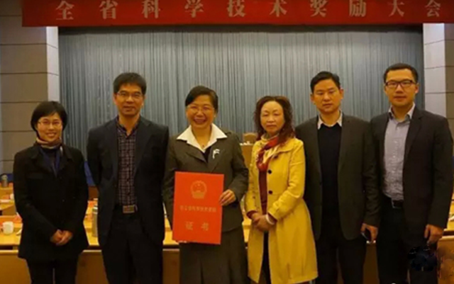
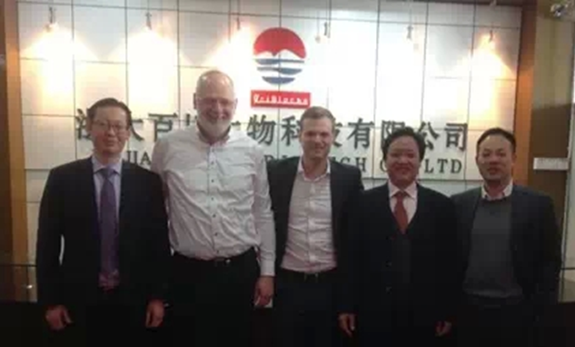
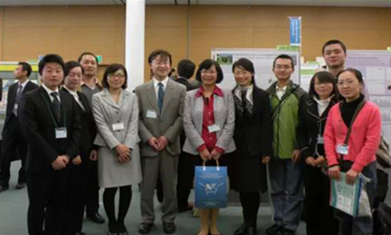

浙江省茶界首获第一个浙江省科技进步一等奖

近日，2015年度浙江省科学技术奖励大会在浙江省人民大会堂隆重召开，浙江省委书记、省人大常委会主任夏宝龙等出席并为获奖单位和个人颁奖，浙江省委副书记、省长李强讲话。
会上颁布了2014年度浙江省科学技术奖励获奖人选和项目。2014年度省科学技术进步奖授奖项目255项，其中一等奖19项，二等奖81项。浙江大学茶学系屠幼英教授、须海荣副教授、李博博士、吴媛媛副教授等完成的“生物催化技术重组并强化茶深加工制品的功能及其产业化”荣获浙江省科技进步奖一等奖。此成果为浙江省茶叶界建国以来的第一个浙江省科技进步一等奖，是茶叶产学研合作的成功示范。

成果简介
“生物催化技术重组并强化茶深加工制品的功能及其产业化”
主要完成人员：屠幼英,须海荣,沈雪亮,李博,吴媛媛,傅竹生,郑羡慕,徐懿,夏琛,赖建红,潘建义,冯海强,余华军
主要完成单位：浙江大学,杭州英仕利生物科技有限公司,浙江茗皇天然食品开发有限公司
成果介绍：本成果以单宁酶为酯型儿茶素脱酯一级反应催化剂，多酚氧化酶为单宁酶水解儿茶素底物的氧化合成多聚物的二级反应催化剂，进行高活性功能成分茶黄素和茶红素的生物转化，并且进行热、冷溶型速溶红茶的产业化，其茶黄素高于3%，茶红素高于5%。应用复合酶技术制备高氨基酸茶饮料浓缩液和速溶茶粉产品。在高温萃取后的茶渣中添加纤维素酶和果胶酶，加速茶叶细胞的破坏崩解，调节pH后添加不同种类的蛋白酶，使茶渣中蛋白质分解为游离氨基酸，并通过谷氨酰胺酶改变氨基酸的组成，最后分离、膜过滤和浓缩等工艺，开发出清香鲜醇高氨基酸含量的茶提取物系列产品。根据形态有液体的茶浓缩液和固体的速溶茶粉；根据不同的原料又有绿茶、红茶和乌龙茶等产品。建立了大孔树脂结合半制备色谱的高效、快速制备茶黄素单体的方法。结合儿茶素和茶黄素协同抗氧化、降脂等理论研究结果，成功开发多种终端产品。生产的高茶黄素含量的速溶茶粉其茶黄素含量≥3%，茶红素含量≥5%；清香鲜醇高氨基酸含量的茶提取物的氨基酸含量高于5%。脱苦速溶茶：酯型儿茶素≤50%总儿茶素。

本成果共获得授权国家发明专利4项。一种从红茶色素溶液中分离高纯度茶黄素的方法、一种茶口服片及其制备方法、绿茶浓缩液的提取方法、一种高纯度茶多酚口含片及其制备方法。发表论文30余篇，其中SCI收录28篇，出版著作一部。建成高品质茶浓缩液1000吨/年生产线1条，高品质速溶茶粉1500吨/年生产线2条；茶黄素口服片和茶口含片产品已上市，建立了产品企业标准。
成果已在浙江茗皇天然食品开发有限公司、上虞健茗茶业有限公司、浙大百川生物食品技术有限公司和杭州英仕利生物科技有限公司实施。前三家企业生产的高科技茶深加工制品是目前国内外饮料企业(康师傅、娃哈哈、可口可乐、雀巢和香飘飘等)的主要产品原料。项目从2011年至今推动我省丽水、安吉县、余杭区和开化县共计68.95万亩夏秋茶资源的利用，使农民增收。2008年-2013年通过本项目技术实现新增销售收入121517万元，新增利税7221.19万元，出口创汇2689.2万美元。